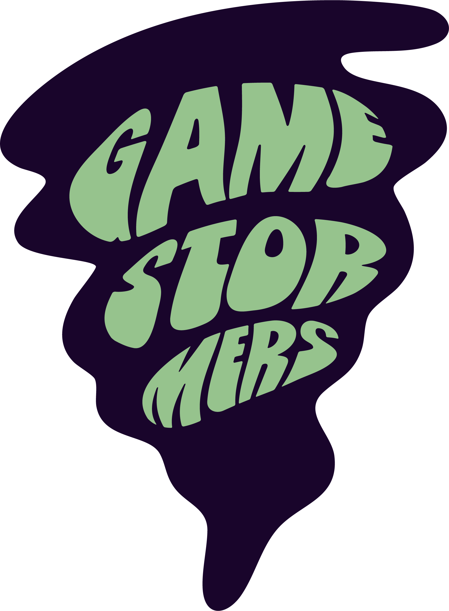
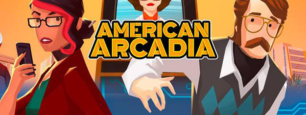
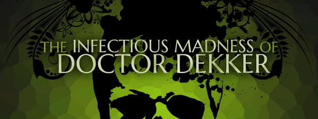

TEST Videospilklub i Aarhus
Vi vælger et spil, spiller det hjemme, og mødes for at snakke om det – som en bogklub, bare med spil.
Om Aarhus Gamestormers
Aarhus Gamestormers er en månedlig videospilsklub for voksne i Aarhus, hvor vi – ligesom i en bogklub – mødes for at diskutere et udvalgt spil, vi alle har spillet op til mødet. Formålet er at dykke ned i videospil som kunstform og interaktiv fortælling, og samtidig skabe et socialt samlingspunkt for folk med interesse for spil- og nørdekultur.
Møderne foregår i hyggelige rammer i Folkehuset Møllestien. Møderne er uformelle, nysgerrige og hyggelige. Der er ingen krav om at være “færdig” med spillet, men man skal forvente spoilers.
Klubbens samlingspunkt er på Discord og er international. Der kommunikeres derfor på engelsk. Man er velkommen til at være med på Discord-serveren, selvom man ikke er interesseret i klubmøderne. Man skal være mindst 18 år, for at være med.
Kommende events
-
11MAJ
15. møde - American Arcadia
18:30 · Folkehuset Møllestien, Grønnegade 10, 8000 Aarhus C
Et filmisk puzzle-eventyr om at flygte fra en retro-futuristisk by, hvor dit liv bliver sendt som reality-TV.

-
06JUNI
16. møde - The Infectious Madness of Doctor Dekker
18:30 · Folkehuset Møllestien, Grønnegade 10, 8000 Aarhus C
Et mørkt FMV-mysteriespil, hvor du afhører den afdøde Doctor Dekkers patienter for at finde hans morder.

Meld dig til møder og følg annonceringer og afstemninger på vores Discord.
Tilmeld DiscordKlubbens mødehistorik
Her finder du de spil, vi allerede har oplevet og talt om sammen. Vi vælger typisk spil, der kan spilles på PC, og som man kan gennemføre hovedhistorien i på cirka 10 timer eller mindre. Der må dog gerne være masser af sideindhold for dem, der vil fordybe sig mere.
- 1. møde — Outer Wilds
- 2. møde — Oxenfree
- 3. møde — Little Nightmares
- 4. møde — Firewatch
- 5. møde — Vampire Therapist
- 6. møde — Neva
- 7. møde — A Plague Tale: Innocence
- 8. møde — TUNIC
- 9. møde — The Forgotten City
- 10. møde — The Stanley Parable
- 11. møde — Psychonauts
- 12. møde — Lost in Random
- 13. møde — Inscryption
- 14. møde — Tiny Bookshop